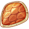

果实介绍
| 名称 | 介绍 | |
|---|---|---|
| 种子 | 谜一样的种子，不知道种下去会得到什么。 | |
| 洒水壶 | 用来土地浇水，对付干旱。 | |
| 除草剂 | 清除地里杂草。 | |
| 除虫剂 | 清除地里害虫。 | |
| 化肥 | 减少生长时间3小时，每个阶段仅限施肥一次。 | |
| 钻石宝箱 | 使用50朵玫瑰，抽取巨奖！ | |
| 金宝箱 | 用50南瓜、25草莓，抽出大奖！ | |
| 银宝箱 | 用100辣椒、50西瓜，抽出大奖！ | |
| 铜宝箱 | 用200萝卜、100苹果，抽出大奖！ | |
| 银锄头 | 用它来铲地，可产生种子。 | |
| 铜锄头 | 用它来铲地，可产生种子。 | |
| 青帝之泪 | 可进行效率更高的果实重生。 | |
| 加速符 | 可对某种材料生产进行加速的物品 | |
| 劳动勋章 | 收割作物的荣誉标志，可用于普通物品兑换。 | |
| 名师令牌 | 推广其他玩家达到6级,可以领取的专属令牌。 | |
| 白色宝箱 | 可能获得1.封印之石 2.龙鳞 3.士兵装备. | |
| 绿色宝箱 | 可能获得1.封印之石 2.龙鳞 3.士兵装备. | |
| 蓝色宝箱 | 可能获得1.封印之石 2.龙鳞 3.士兵装备. | |
| 紫色宝箱 | 可能获得1.封印之石 2.龙鳞 3.士兵装备. | |
| 橙色宝箱 | 可能获得1.封印之石 2.龙鳞3.士兵装备. | |
| 挑战宝箱 | 可能获得1.步兵 2.弓箭手 3.火枪手 | |
| 材料宝箱 | 可能获得1.木材 2.石头 3.钢材 | |
| 封印之石 | 封印地狱恶龙之石,神秘功能未知. | |
|  | 龙鳞 | 击退恶龙的战利品,合成战争专属果实的必需品! |
| 火龙之心 | 专属战斗作物之心,在蓝土地上可种出火龙果! | |
| 惠农果 | 游戏中意外获得的惠农果,可以在电商网兑换真实水果! |